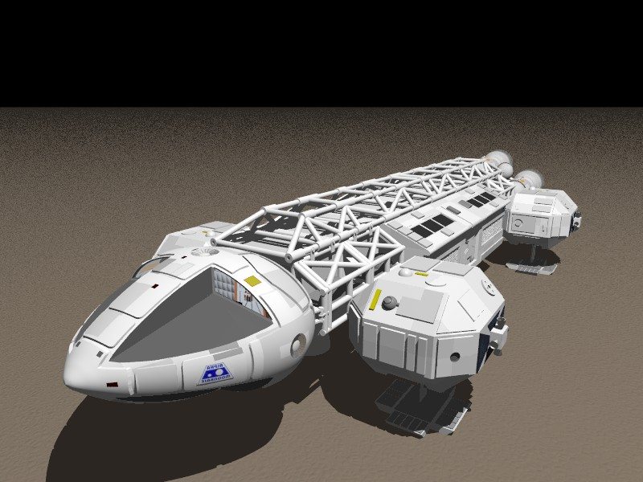
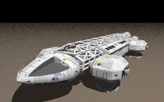

POV-Ray Object Collection
|  |
The TV series, Space 1999 starts with an accidental nuclear explosion on Moonbase Alpha, which blows the moon out of orbit, causing it to leave the solar system and drift through space. The occupants of the moonbase manage to get systems back online and get their Eagle Transport vehicles operating again too late to make it back to Earth. This fleet of transporters was crucial to the survival of the colony as it drifted through space, being used to gather supplies and to defend against alien attack.
You can add this Eagle Transporter to your scene file by including the "eagle.inc" file.
The file returns a single object centred at the origin and standing on the plane Y=0 with the cockpit facing in the -X direction. The Transporter is about 36 POV-Ray units in length and stands about 7 metres high.
You can wrap it in an object statement and transform it as required to fit into your scene. For example:
The following images show the Eagle in space, the interior of the cargo bay and the cockpit. Eagle-eyed observers will notice that some of the astronauts anatomy is missing inside the cockpit. These elements seemed to have been present in the Moray file, but generated errors when exported to POV-Ray format. If anyone sufficiently proficient with Moray can fix that, then you can upload a new version or send the updates to me and I'll do it (CB). The Moray model is included in this download.
Version 1.0 of the include file was adapted to conform to the naming conventions for the POV-Ray Object Collection by Chris Bartlett in September 2009. All identifiers are now prefixed with 'Eagle_' and all file names start with 'eagle'. The following additional changes were made:

Return to Table of Contents